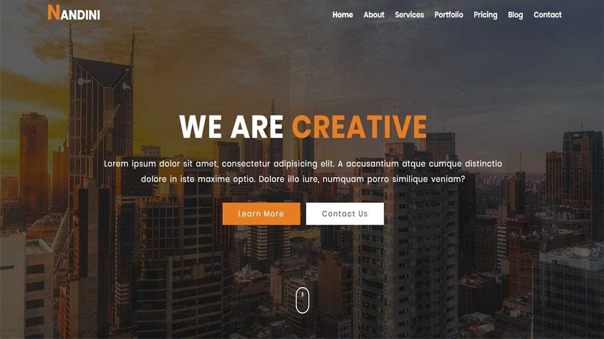

|  |  |
|
This section is about the navigation bar of my website.I got inspired by the navigation bar of the other webpage that is at the right side so, I have made similar kind of navigation bar in my webpage also.The navigation bar is aligned at right. Transparent background is kept and boarder is also placed likewise of the left website |
|